Primera propuesta
Esta propuesta permite conocer las experiencias previas de otros alumnos, comparar perfiles docentes y descubrir afinidades temáticas o metodológicas, a través de los resultados de la evaluación docente (una calificación puesta por los alumnos al docente) y explorar el perfil de cada profesor/a, accediendo a memorias y tesis guiadas anteriormente.
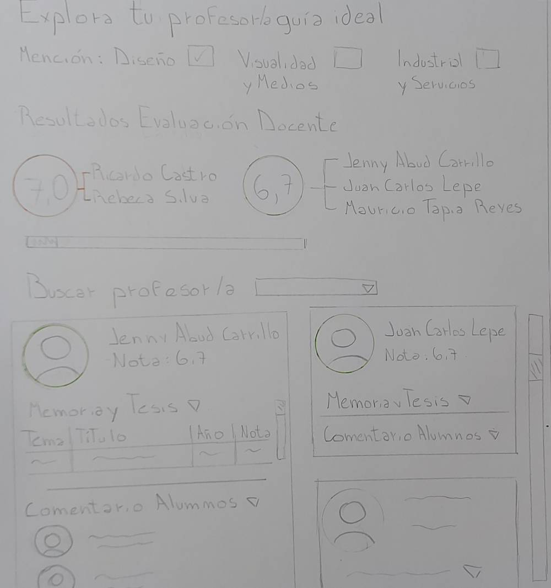
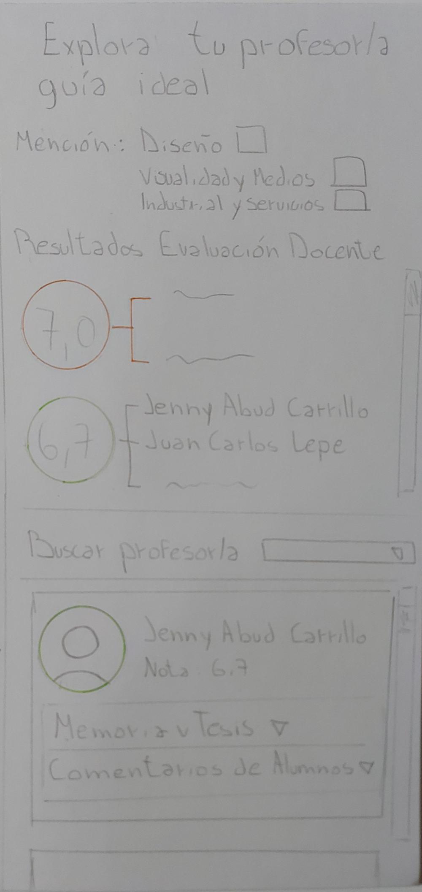
Segunda propuesta
La segunda propuesta muestra el nivel de aprobación docente con gráficas circulares interactivas. Al hacer clic en un porcentaje, se despliega el perfil del profesor/a correspondiente o al deslizar se verán los perfiles ordenados de mayor a menor.
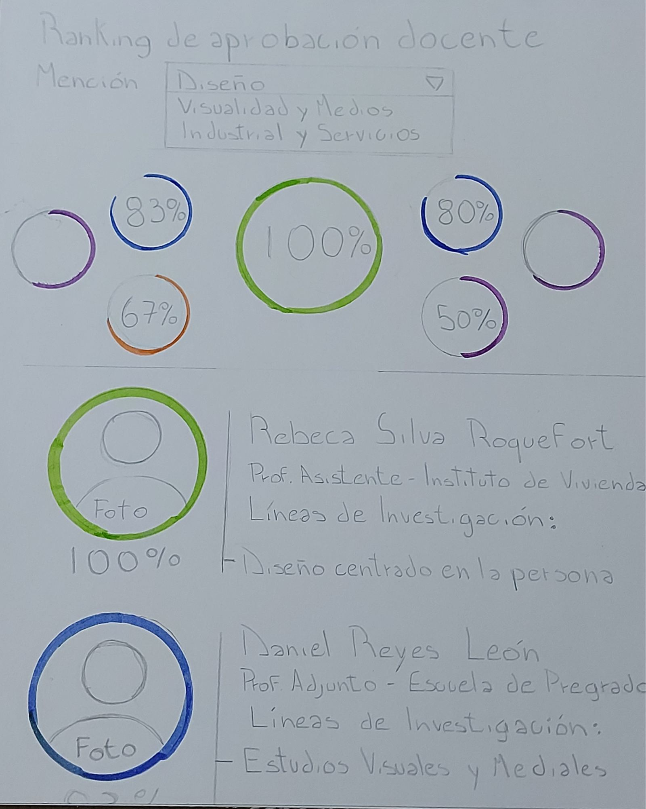
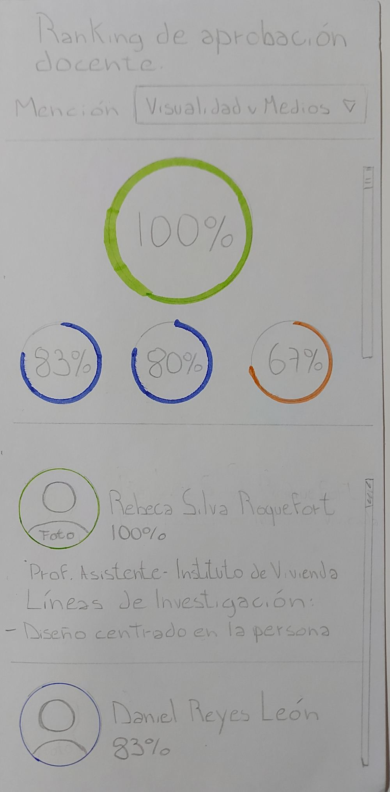
Tercera propuesta
Esta propuesta muestra el promedio de notas por profesor/a guía en proyectos de título, junto a un análisis visual de los temas más frecuentes trabajados. Luego el estudiante puede buscar profesores, y explorar memorias y tesis por tema, año y nota.
Así, el/la estudiante puede encontrar profesores que trabajan con temas de investigación afines a sus intereses y conocer anteriores proyectos.
 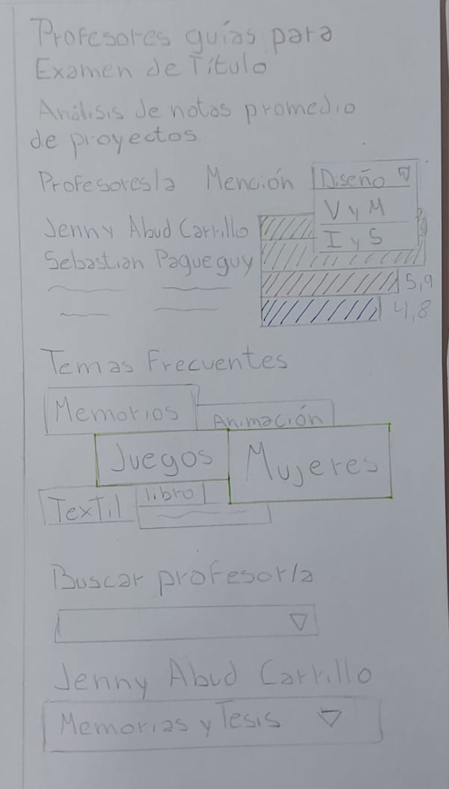
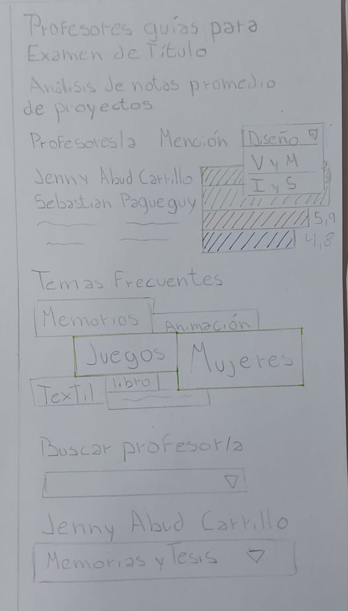
Cuarta propuesta
Lo principal de esta propuesta es el tema de investigación. El alumno busca un tema y los resultados le ofrecerán profesores que más se acerquen a esa área de investigación. Al ser una propuesta interactiva el estudiante podrá seleccionar dos profesores que le llame la atención y compararlos.
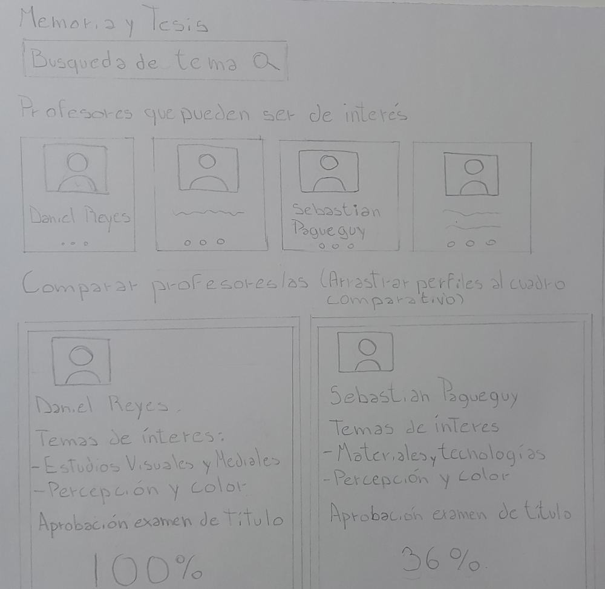
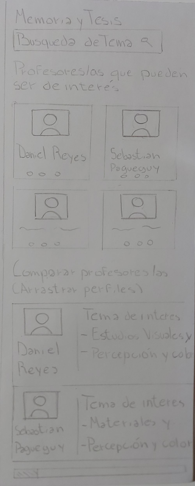
Quinta propuesta
En esta propuesta se muestran los resultados de un test de personalidad de los profesores basado en la opinión de los alumnos. En este se puede comprar a diferentes profesores basados en dos criterios: Su forma de relacionarse con sus alumnos y su modo de trabajo.
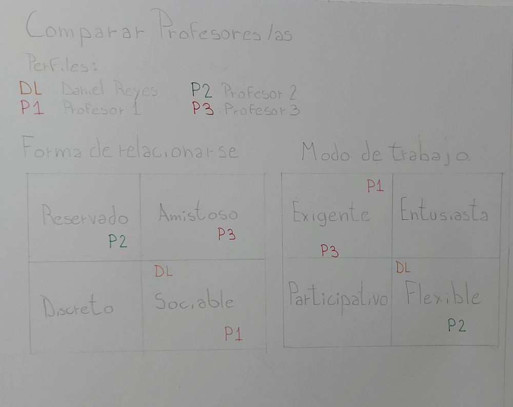
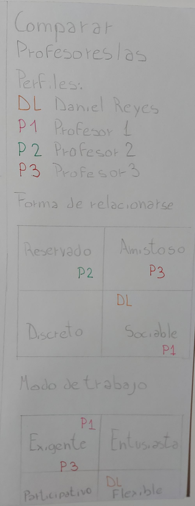
Sexta propuesta
La sexta propuesta realiza una comparación entre los profesores basados en su modo de trabajar con los alumnos, utilizando un gráfico radar chart.
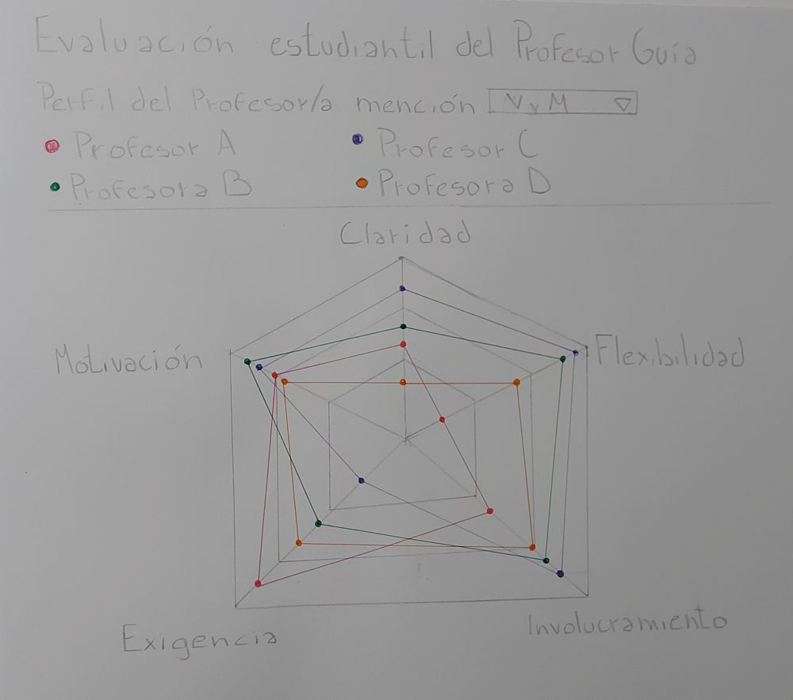
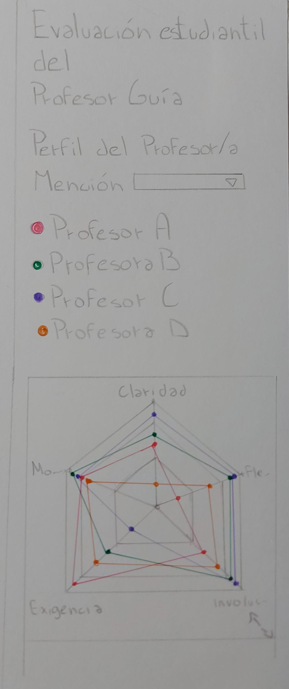